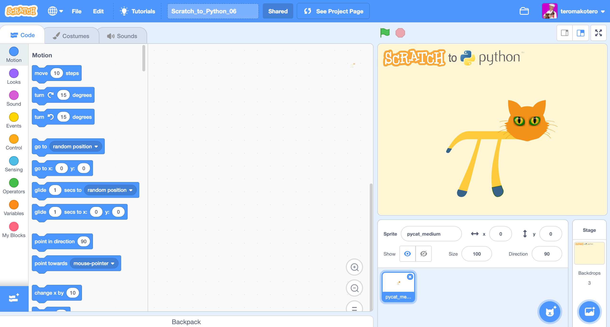
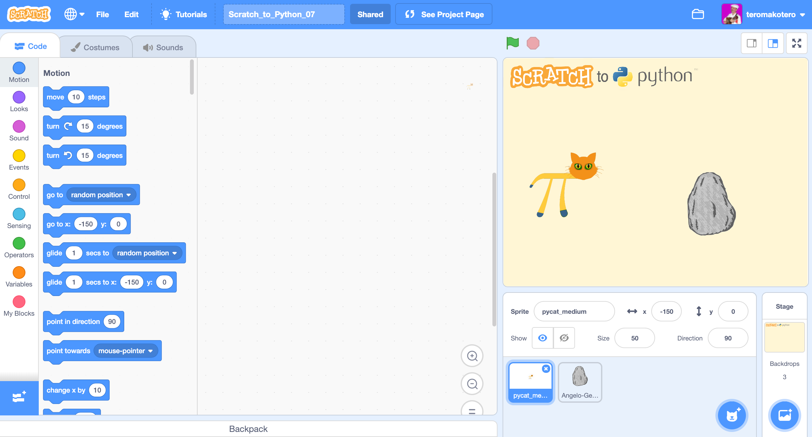
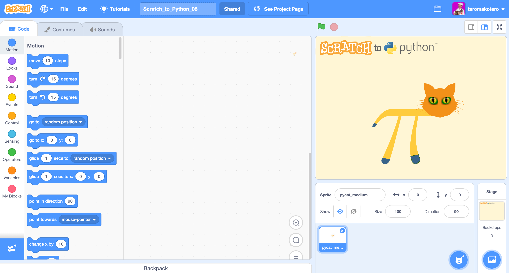

Condition Challenges
Challenge Scratch_to_Python_06
In this challenge you will learn how to make a program that tells whether a positive or negative number has been given. The program stops if a negative number is given. In this challenge, zero is considered a positive number.
We use the Player Learning method in this challenge. You can come up with a solution through trials and mistakes. The method of trial and error is one of the basic methods for solving a problem.
Instructions
- Get the program to ask "Enter number". You will find a suitable block in the Sensing Blocks.
- Check if the number is positive or negative. You will find a suitable block in the Operators Blocks.
- If the number is positive or zero, Pycat will say "It's a positive number" in the speech bubble.
- If the number is negative, Pycat will say "It is a negative number" in the speech bubble and the program stops.
Challenge 06
You come to the challenge either by clicking on the heading "Challenge 06" or on the picture of the challenge.
 Link to challenge Scratch_to_Python_06 file.Video showing the solution to the Scratch_to_Python_06 challenge
Challenge Scratch_to_Python_07
In this challenge you get Pycat to say "Stone!" In the speech bubble and stop when it touches a stone figure.
We use the Player Learning method in this challenge. The feeling of frustration and irritation is an important part of the learning process.
Instructions
- Animate first so that Pycat walks
- Tip: In the Sensing Blocks you find the block "touching" that checks if the Sprite (Pycat) touches another (stone).
- The location of the stone is pre-programmed so that it changes place each time you click on the green flag.
- Click spacebar to get Pycat back to its starting position.
Challenge 07
You come to the challenge either by clicking on the heading "Challenge 07" or on the picture of the challenge.
 Link to challenge Scratch_to_Python_07 file.Video showing the solution to the Scratch_to_Python_07 challenge
Challenge Scratch_to_Python_08
In this challenge, the program asks "What is your name?" And then says "Hello" and the name in a speech bubble. If you write instead of the name "end", the program says "Goodbye" and stops.
We use the Player Learning method in this challenge. You can come up with a solution through trials and mistakes. The method of trial and error is one of the basic methods for solving a problem.
Instructions
- This challenge is quite similar to challenge 06, so you can take advantage of it if you do not otherwise get a solution.
Challenge 08
You come to the challenge either by clicking on the heading "Challenge 08" or on the picture of the challenge.
 Link to challenge Scratch_to_Python_08 file.